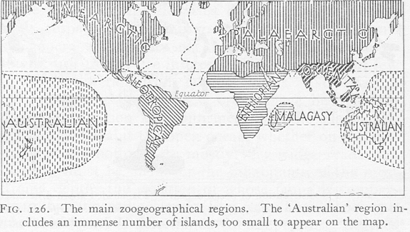

Darwins Vorgänger und Einflüsse
6. Biogeographische Verteilung
von John Wilkins
Zurück |
Inhalt |
Weiter |
Die Idee, dass die Verbreitungsgebiete von Arten auf deren Ausbreitung von einem Ursprungsort zurückzuführen sind, hatte vor der Entwicklung dieser Vorstellung durch Darwin im Jahr 1837 mehrere Vorläufer. Buffon lenkte die Aufmerksamkeit darauf, dass ähnliche Arten in verschiedenen Ökologien dieselbe Position einnehmen (obwohl er diese Begriffe nicht verwendete1). Der deutsche Zoologe Peter Simon Pallas entdeckte, dass ähnliche Formen oft durch eine gestufte Kette von Zwischenformen verbunden sind, und 1825 zog Leopold von Buch die logische Schlussfolgerung, dass Varietäten zu segregierten Arten werden.
Der erste Biologe, der vorschlug, dass Arten unabhängig voneinander überall auf der Welt erschaffen wurden, war jedoch der Botaniker J. G. Gmelin im Jahr 1747. Wie Mayr sagt, wurde nach seiner Arbeit „die biblische Geschichte vom Garten Eden und von der Arche Noah stillschweigend durch verschiedene Theorien der Centres of creation ersetzt“.2. Und Buffon („der Vater der Zoogeographie“3) schlug 1779 vor, dass eine Fauna (die vollständige Ökologie eines Gebiets) das Produkt der Bedingungen des Distrikts sei, in dem sie entstanden sei. Dies war jedoch keine Theorie der gemeinsamen Abstammung, sondern der besonderen Schöpfung. „Die Erde macht die Pflanzen; die Erde und die Pflanzen machen die Tiere", schrieb er4.
Hookers Freund Joseph Hooker hatte beträchtliche Arbeit an der geografischen Verbreitung geleistet, basierend auf seinen Reisen nach der Antarktis, Australien und Neuseeland zwischen 1839 und 1843, und hatte Experimente durchgeführt, um zu zeigen, dass Arten sich über ihr „zugeteiltes" Gebiet hinaus ausbreiten können, veröffentlicht 1853. Dies beeinflusste Darwins Denken zum Thema eindeutig. Geografische (auch jetzt als „allopatrisch" bekannte) Artbildung – die Idee, dass Isolation aufgrund geografischer Barrieren eine Ursache der Artbildung ist – war etwas, das Darwin für wichtig hielt, insbesondere auf Inseln, aber auch dort, wo Flüsse, Berge und andere Hindernisse verhindern, dass sich Arten in separate Fortpflanzungspopulationen aufspalten und wieder kreuzen. Nach Mayr zögerte Darwin bezüglich ihrer Bedeutung und akzeptierte schließlich auch die Möglichkeit einer „sympatrischen" Artbildung – Artbildung aufgrund eines Übergangs in neue ökologische oder verhaltensbezogene Nischen.
 |
| Wallace bestimmte eine Reihe von biogeographischen Regionen (siehe unten), in denen verschiedene Organismen vorkamen, und erklärte sie mit seinem "Einführungsprinzip". |
|---|
Einige andere Botaniker und Zoologen hatten bereits die definierte Verbreitung von Arten bemerkt, insbesondere Alexander von Humboldt (1805), aber auch EAW Zimmerman (1778–1783) und CF Willdenow (1798), und es war dies, was dem Gedanken den Todesstoß versetzte, dass sich Arten von einem zentralen Punkt ausgebreitet hätten, dem Landeplatz der Arche. Allerdings hatte nur Alfred Russel Wallace im Jahr 1855 das Prinzip veröffentlicht, wonach Arten im Raum und in der Zeit stets in der Nähe einer verwandten Art gefunden werden, die sie im geologischen Record vorausgeht. Wallace führte seine Arbeiten in der Amazonasregion und dem malaiischen Archipel durch, während Darwins eigene Beobachtungen zwanzig Jahre zuvor im Galápagos-Archipel und auf den Ebenen von Patagonien während der Beagle-Reise stattgefunden hatten. Darwin wurde zur Veröffentlichung seiner Ideen veranlasst, als Wallace, der Darwins Ansichten nicht kannte, ihm 1858 einen Aufsatz zum Thema (und zur natürlichen Selektion) zusandte. Darwin hatte gerade den Tod seines Sohnes Charles erlitten und überreichte ihm in seiner Trauer Lyell und Hooker, mit denen er zuvor seine Ansichten diskutiert hatte (seine Diskussionen mit Lyell wurden durch Lyells Begeisterung für Wallaces 1855er Aufsatz angestoßen), die ihn der Linnean Society of London einreichten, ergänzt durch Auszüge aus Darwins unveröffentlichtem 1844er Essay on Natural Selection und einem Brief, den Darwin am 5. September 1857 an Asa Gray in den Vereinigten Staaten schrieb. Es ist klar, dass Wallace und Darwin die Biogeographie unabhängig voneinander entdeckt haben und dem gemeinsamen Kredit zuteil werden, der ihnen nun zugeschrieben wird.5
1 Mayr 1982, S. 411
2 Mayr 1982, S. 440
3 Mayr 1982, S. 440
4 Mayr 1982, S. 441
5 Vgl. jedoch Quammen 1996, Kapitel 2 und 3, für eine Übersicht der abweichenden Ansichten verschiedener Autoren. Eine kürzlich erschienene Biografie von Wallace von Shermer (2002) hat die Ansichten von Brooks in Frage gestellt, die Quammen darlegt, wonach Darwin unehrlich war in der Art und Weise, wie er mit Wallaces Papier umging. Siehe auch Rabys (2001) Biografie von Wallace. Wallaces Brief an Hooker, in dem er ihn für die Art und Weise bedankt, wie er und Lyell die Prioritätsfrage bearbeitet, wurde erhalten und kürzlich in The Linnean Band 18:3ff veröffentlicht.
Ternate, Molukken, 6. Oktober 1858
Mein lieber Herr
Ich nehme mir die Freiheit, den Erhalt Ihres Briefes vom letzten Juli zu bestätigen, der mir von Mr
Darwin übermittelt wurde, und mir mitteilt, welche Schritte Sie in Bezug auf ein Papier unternommen haben, das ich an diesen Gentleman übermittelt habe. Erlauben Sie mir, Sie zunächst aufrichtig für Ihre freundlichen Dienste bei dieser Gelegenheit zu danken und Ihnen zu versichern, dass ich sowohl durch den von Ihnen eingeschlagenen Weg als auch durch die günstigen Meinungen über meinen Aufsatz, die Sie so freundlich geäußert haben, sehr erfreut bin. Ich kann mich in dieser Angelegenheit nicht als begünstigte Partei betrachten, da es bisher in Fällen dieser Art üblich war, allen Verdienst dem ersten Entdecker einer neuen Tatsache oder einer neuen
Theorie zuzuschreiben, und dem anderen Parteien, die möglicherweise ganz unabhängig davon, einige Jahre oder einige Stunden später, zu denselben Ergebnissen gelangt sind, wenig oder gar keinen.Ich betrachte es auch als ein höchst glückliches Umstand, dass ich vor kurzem
eine Korrespondenz mit Mr Darwin über das Thema „Varietäten" begonnen habe, da dies zur früheren Veröffentlichung eines Teils seiner Forschungen geführt hat und ihm einen Anspruch auf Priorität gesichert hat, den eine unabhängige Veröffentlichung entweder durch mich oder eine andere
Partei möglicherweise nachteilig beeinträchtigt hätte; - denn es ist evident, dass die Zeit gekommen ist, wenn diese und ähnliche Ansichten verbreitet werden und
müssen fair diskutiert werden.Es hätte mir viel Schmerz und Bedauern verursacht, wenn Mr Darwins Übermaß an Großzügigkeit
ihn dazu veranlasst hätte, mein Papier ohne seine eigenen viel früheren und ich zweifle
nicht viel vollständigeren Ansichten zum selben Thema öffentlich zu machen, und ich muss Sie erneut für den
Weg bedanken, den Sie eingeschlagen haben, der zwar streng gerecht gegenüber beiden Parteien ist, aber so günstig für mich ist.
Da ich am Vorabend einer neuen Reise stehe, kann ich jetzt nichts anderes hinzufügen als Ihnen für
Ihren freundlichen Rat bezüglich eines schnellen Rückkehres nach England zu danken; - aber ich wage zu sagen, dass Sie gut wissen &
fühlen, dass es einen Naturalisten dazu zu veranlassen, seine Forschungen an dem interessantesten Punkt
aufzugeben, einige überzeugendere Argumente erfordert als die bevorstehende Verlust der Gesundheit.Ich verbleibe
Mein lieber Herr
Ihr sehr aufrichtig
Alfred R WallaceJ.D.Hooker M.D.
Transkription einer Kopie eines handschriftlichen Briefes ... im Besitz von Q. Keynes.
Für Prof. Gardiner transkribiert von Gina Douglas, Bibliothekarin, Linnean Society of London, 25. Juli 2002.
Zurück |
Inhalt |
Weiter |
| Die FAQ | Lesenswerte Dateien | Index | Kreationismus | Evolution | Alter der Erde | Flood Geology | Katastrophismus | Debatten |